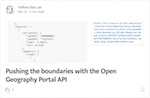
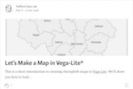
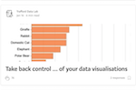
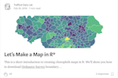
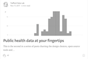

Learning
Helpful learning resources, such as our tutorial guides for the various technologies that we use in the form of companions and tutorials.
Recipes for local government
These are recipes to common tasks like retrieving data from Nomis, geocoding addresses, and creating data visualisations like population pyramids. All the R code is provided along with step by step instructions.
These are recipes to common tasks like retrieving data from Nomis, geocoding addresses, and creating data visualisations like population pyramids. All the R code is provided along with step by step instructions.
Companions
Climate Emergency
We've curated some open datasets relating to climate change to help UK councils that have declared a "climate emergency" and those that haven’t. We have also created a climate emergency slide pack app to help visualise open data relating to climate change.
Vega-Lite
A guide to creating interactive data visualisations using Vega-Lite. Our accompanying blog post on Medium provides a useful introduction.
Open Data
This companion provides R code demonstrating how to retrieve and tidy open data from a number of government APIs.
ggplot2
This demonstrates the different types of visualisation that are possible with the ggplot2 package in R, providing code for each of the examples.
Tutorials
Pushing the boundaries with the Open Geography Portal API
This post will show you how to download digital vector boundaries for custom administrative geographies using the Open Geography Portal API.
This post will show you how to download digital vector boundaries for custom administrative geographies using the Open Geography Portal API.
Let’s Make a Map in Vega-Lite*
This is a short introduction to creating choropleth maps in Vega-Lite. We’ll show you how to load geospatial data, customise maps and join attributes.
This is a short introduction to creating choropleth maps in Vega-Lite. We’ll show you how to load geospatial data, customise maps and join attributes.
Take back control … of your data visualisations
This tutorial explain step-by-step how to create chart using Vega-Lite that allows users to quickly build visually appealing static and interactive data visualisations in their web browser.
This tutorial explain step-by-step how to create chart using Vega-Lite that allows users to quickly build visually appealing static and interactive data visualisations in their web browser.
Querying APIs in R
This article details the steps required to request data from Governments and other organisations Web service APIs using R.
This article details the steps required to request data from Governments and other organisations Web service APIs using R.
Let’s Make a Map in R*
This is a short introduction to creating choropleth maps in R. The tutorial will show you how to download Ordnance Survey boundary layers, merge them with 2011 Census data and visualise the results in classed and unclassed choropleth maps.
This is a short introduction to creating choropleth maps in R. The tutorial will show you how to download Ordnance Survey boundary layers, merge them with 2011 Census data and visualise the results in classed and unclassed choropleth maps.
Public health data at your fingertips
Using the fingertipsR package the tutorial show you how to download some data from Public Health England’s Fingertips repository and visualise it in R.
Using the fingertipsR package the tutorial show you how to download some data from Public Health England’s Fingertips repository and visualise it in R.